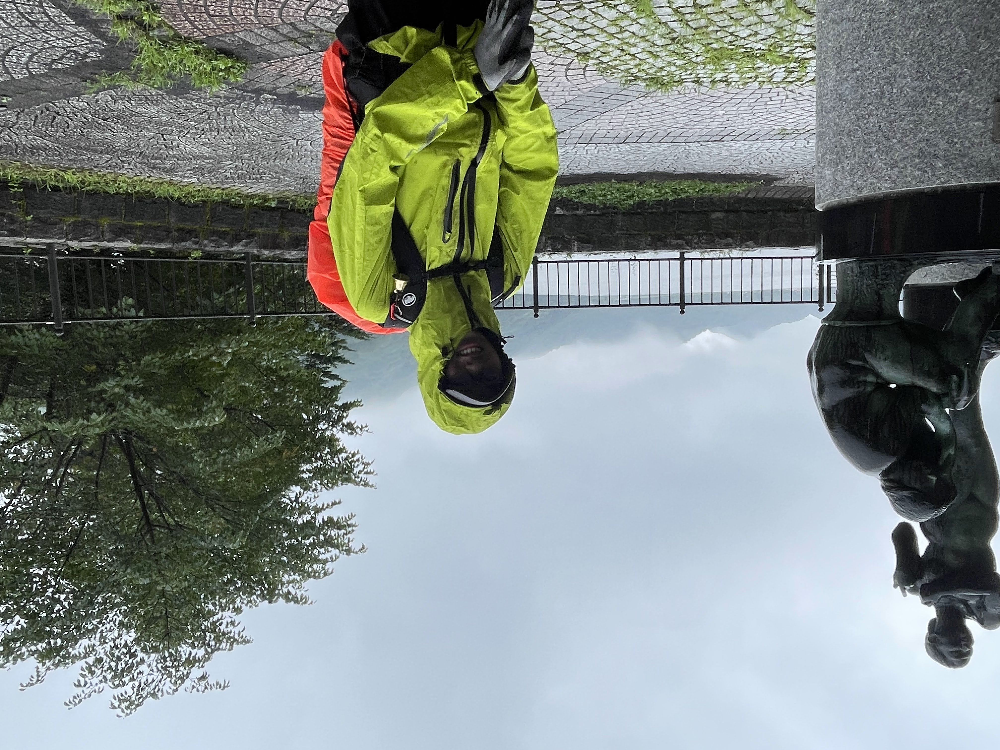

はじめまして，このページの主のゆずと申します．現在は，早稲田大学人間科学部の学部一回生です．登山は昔から好きで，小学生のときは学校の課外プログラムで登山に参加したりしていました．しかし，本格的に始めたのは高校生になってからです．高校1年生のときに越後湯沢に紅葉を見に行ったことが登山を始めるきっかけでした．2時間ほどの軽いハイキングを行ったのですが，それが思ったよりも楽しかったので本格的に登山を始めることにしました．大学附属の高校に通っていたため大学受験がなく，高校時代はたくさん山行に出かけることができました．大学に入学以降はサークル活動に時間を取られてるため山に行けていませんが，落ち着いたら行きたいと思っています．春季休業期間や夏季休業期間に時間を作って山に行こうと考えています．
登山の他には，旅行や写真撮影などが好きです．ときどき高校の同期と旅行に行ったりしています．高校時代には，友人とフランス・イタリア旅行に行ったりしました．行ったことのある国は，アメリカ(ハワイだけ)・アイルランド・フランス・イタリア・フィンランドです．今年，トルコとギリシャに行く予定です．もちろん国内旅行も好きで，青春18きっぷで旅をするのも好きです．あとは，ライブに行ったりはしないですがアイドルが好きです．最近はAVAMというグループにハマっています．今は解散してしまいましたが，BISHというグループも好きです．ただどちらも楽曲を聴いて楽しむ程度です．これを趣味というかは微妙ですが，数学がとても好きです．最近は特に，代数学に興味があります．まだまだなので，これからもっと勉強してつよつよ代数マンになりたいと思います．ちなみに地雷系女子がタイプです．地雷系の子に会うためにコンカフェに行ったこともあります(ボソッ)．
写真は友人と榛名山に登った後に榛名湖の近くで撮ったものです．当日はあいにくの悪天候でした．

秋田大学のオープンキャンパスに行くついでに登ってきました．ちなみに秋田県最高峰です．
登山初心者の同級生と一緒に行ってきました．雨だったので景色は見れなかったのですが楽しかったですね．
榛名山に行った友人とは違う友人と一緒に登りました．途中までは晴れていましたが，天候が悪化してしまいました．ついていないですね．
こりゃまた違う友人と登ってきました．山友達が多いと楽しいですね．
城峯山に登った次の日だったので足が終わってました．これまた違う友人と．
単独山行でした．越後湯沢までの新幹線代がばかにならなかったです．
本当はもっと縦走する予定でしたが，急に腹痛が襲ってきて下山することになったという思いでがあります．
クリスマスに1人で登ってきました．クリぼっちの最終形態．
今までとは違う友人と登ってきました．一緒に山に行ってくれる人が多くて幸せです．
1人で寂しかったのですが，他の登山者の方がたくさんいて，孤独感はありませんでした．
学校が休校になったので，急遽登ってきました．
中国地方周遊の旅の途中に登ってきました．
高畑山に行った友人と登ってきました．この友人とはまた一緒に登る予定です．
山の説明
山の説明
山の説明
山の説明
山の説明
SNSはあまり更新しませんが，noteとYAMAPはときどき更新しています．それぞれ，ゆずのnoteはこちらとゆずのYAMAPはこちらからご覧いただけます．一応ツイッターとインスタのアカウントは存在しますが，現在SNS中毒を抜け出すために休止中です．